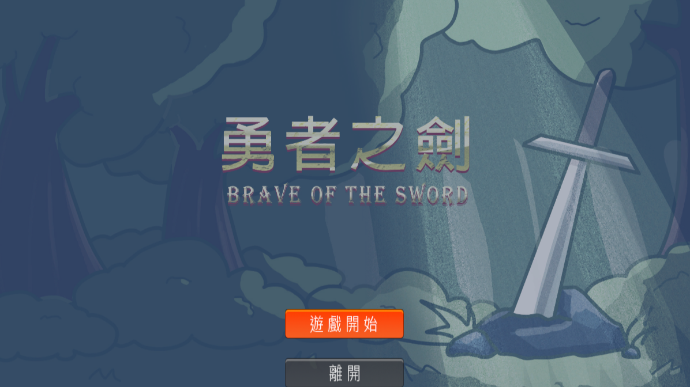
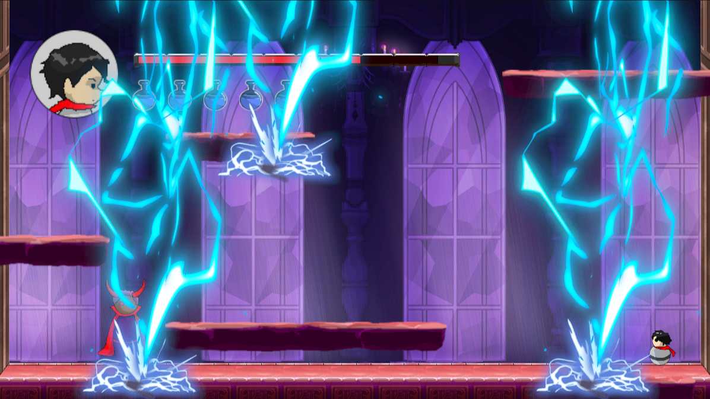

經歷
參與專案
專題：情緒分析應用於社群論壇之文件探勘


簡介
透過爬蟲技術進行資料蒐集，結合自然語言生成模型及情感分析來分析資料，最後以網頁呈現視覺化的分析結果。
負責部分
在專題中，我負責製作前端網頁，透過串接後端API來獲取分析資料，並以Chart.js等圖表套件呈現結果。
測試連結
https://dannylin901022.github.io/web/課程專案：Party Plants


簡介
使用水位感測器、光照感測器等，蒐集盆栽的環境數據，並顯示在app中供使用者查看，且可透過設定，讓盆栽自動供水及光照。
負責部分
在此專案中，我負責app的初步設計，用以獲取後端資料及顯示數據，而後有進行分工調整，後期改為製作後端歷史紀錄功能的工作，而介面的優化則由他人負責。